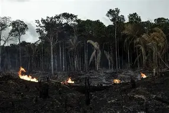

üìÖ A√±o 2025
üèûÔ∏è Beni
| Tipo de Daño | Tipo de Contaminación | Personas Afectadas | Muertes Humanas | Fauna Afectada | Lugar | Consecuencias Ambientales | Impacto Socioeconómico | Medidas de Mitigación | Datos Curiosos / Récords | Imagen |
|---|---|---|---|---|---|---|---|---|---|---|
| Fenómenos climáticos extremos e inundaciones | Agua, Suelo | 20,000 | 25 | 10,000 animales | Beni | Destrucción de ecosistemas, contaminación hídrica | Crisis humanitaria, pérdida de cultivos y viviendas | Educación ambiental, prevención de inundaciones, drenajes | Mayor inundación registrada en los últimos 10 años |
üèîÔ∏è La Paz
| Tipo de Daño | Tipo de Contaminación | Personas Afectadas | Muertes Humanas | Fauna Afectada | Lugar | Consecuencias Ambientales | Impacto Socioeconómico | Medidas de Mitigación | Datos Curiosos / Récords | Imagen |
|---|---|---|---|---|---|---|---|---|---|---|
| Contaminación del aire y agua | Aire, Agua | 10,000 | 0 | Peces y aves locales | La Paz | Intoxicaciones, pérdida de calidad de ecosistemas | Enfermedades respiratorias y gastrointestinales | Educación ambiental, tratamiento de residuos | Mayor aumento de contaminación por quema de residuos y agroquímicos |
üìÖ A√±o 2024
üèûÔ∏è Beni
| Tipo de Daño | Tipo de Contaminación | Personas Afectadas | Muertes Humanas | Fauna Afectada | Lugar | Consecuencias Ambientales | Impacto Socioeconómico | Medidas de Mitigación | Datos Curiosos / Récords | Imagen |
|---|---|---|---|---|---|---|---|---|---|---|
| Incendios forestales masivos y deforestación | Aire, Suelo | 15,000 | 12 | 50,000 animales | Beni | Pérdida de biodiversidad, erosión del suelo, aumento de CO₂ | Desplazamiento de comunidades, pérdida de cultivos | Reforestación, control de incendios, campañas de concientización | Mayor cantidad de hectáreas quemadas en la historia de Bolivia |
üèûÔ∏è Santa Cruz
| Tipo de Daño | Tipo de Contaminación | Personas Afectadas | Muertes Humanas | Fauna Afectada | Lugar | Consecuencias Ambientales | Impacto Socioeconómico | Medidas de Mitigación | Datos Curiosos / Récords | Imagen |
|---|---|---|---|---|---|---|---|---|---|---|
| Deforestación masiva | Suelo | 7,000 | 0 | 40,000 animales desplazados | Santa Cruz | Pérdida de ecosistemas, erosión del suelo | Escasez de recursos naturales para comunidades | Reforestación, protección de bosques primarios | 83% de bosque primario destruido |
üìÖ A√±o 2023
üèûÔ∏è Amazon√≠a boliviana
| Tipo de Daño | Tipo de Contaminación | Personas Afectadas | Muertes Humanas | Fauna Afectada | Lugar | Consecuencias Ambientales | Impacto Socioeconómico | Medidas de Mitigación | Datos Curiosos / Récords | Imagen |
|---|---|---|---|---|---|---|---|---|---|---|
| Deforestación e incendios forestales | Aire, Suelo | 5,000 | 8 | 30,000 animales | Amazonía boliviana | Pérdida de biodiversidad, destrucción de hábitats | Pérdida de recursos naturales, desplazamiento de comunidades | Reforestación, vigilancia de bosques, educación ambiental | Incendios iniciaron por descuidos humanos y sequía extrema |  |
üèûÔ∏è Santa Cruz
| Tipo de Daño | Tipo de Contaminación | Personas Afectadas | Muertes Humanas | Fauna Afectada | Lugar | Consecuencias Ambientales | Impacto Socioeconómico | Medidas de Mitigación | Datos Curiosos / Récords | Imagen |
|---|---|---|---|---|---|---|---|---|---|---|
| Incendios forestales | Aire | 4,000 | 5 | 20,000 animales | Chiquitania | Pérdida de biodiversidad, destrucción de hábitats | Pérdida de cultivos y recursos locales | Campañas de prevención, vigilancia de incendios | 3,3 millones de hectáreas afectadas |